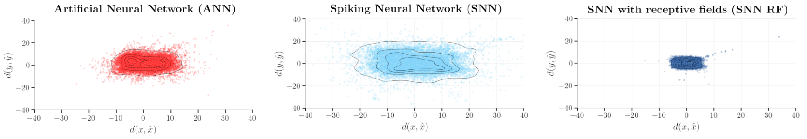

Coordinate regression for event-based vision
We present a novel method to predict translation-invariant spatial coordinates from sparse, event-based vision (EBV) signals using a fully-spiking convolutional neural network (SCNN).
The problem: predicting coordinates with sparse events
The video playing in the background illustrates the sparseness of event-based vision (EBV) cameras. Most pixels are completely empty (~95%), because EBV cameras work by detecting luminosity changes over time. For conventional artificial neural networks this is a challenge. Partly because the signal is sparse and requires integration over time (recurrence) to form coherent "pictures" of objects, and partly because conventional hardware struggles to keep up with EBV cameras sending more than 20M events per second.
Our work here focuses on coordinate regression for event-based data, aiming to predict center coordinates of geometric shapes using spiking neural neural networks, designed for neuromorphic hardware.
Results: LIF beats ReLU
In our setting, a biologically inspired spiking neural network (SNN) with receptive fields (RF) outperform conventional convolutional artificial neural network (ANN). The plot below shows the pixel-wise error for predictions against unseen validation data for four different models.
Why spiking neural networks?
Spiking neural networks (SNNs) and neuromorphic hardware are inherently parallel, asynchronous, low-energy devices that promise accelerated compute capacities for event-based machine learning systems. This work addresses coordinate regression using an inherently asynchronous and parallel spiking architecture that is both compatible with neuromorphic hardware, and, we hope, a step towards more useful neuromorphic algorithms.
The task: event-based dataset
We construted a dataset of geometric shapes (circles, triangles, squares) with center coordinate labels. To provide realistic, structured noise, we superimposed the sparse shapes on office-like scene renderings from the NeuroRobotics Platform (NRP). The shapes are sparsely sampled from a Bernouilli distribution (p=0.8) and are moving around with a brownian motion. The task is for any network to recognize the shapes and predict their center as accurately as possible.
We chose the geometric shapes as a means to control parameters such as shape velocity, event density, and shape complexity. For instance, the current shapes have a radius of 80 pixels, which is too large for any single kernel to learn. The convolutional layer is, therefore, forced to specialize on partial features to correctly solve the task.
In total, the dataset contains 2000 videos of 60 frames each (resembling 1ms of events) with a resolution of 640x480.
Neural network architecture
We use a classical convolutional model consisting of two convolutional layers, followed by an inverse convolution for a slight upsampling. We implemented a differentiable coordinate transform (DCT) layer to transform the pixel-wise activations into a 2-dimensional coordinate. Each convolution is interspersed with non-linear activations, batch normalization and dropout (p=0.1).

Translation-invariant receptive fields
Similar to conventional convolutional systems, we can define receptive field kernels for spiking neural networks. Importantly, we wish to retain translation-invariant properties to capture the moving shapes over time, as neatly illustrates in the work by [Lindeberg 2021].

Preconfiguring the receptive field kernels for the spiking neural networks significantly reduces training time, memory consumption, and ability for the network to generalize, as seen in the loss curves above.
Training and validation
We constructed and trained four independent networks over the same architecture
- a non-spiking network where ReLU units constitute the nonlinearities (ANN)
- a non-spiking network with custom receptive field kernels (ANN-RF)
- a spiking version, with three leaky integrate-and-fire (LIF) nonlinearities feeding a final, non-spiking leaky integrator (SNN)
- a spiking version, resembling (3), but where custom receptive field kernels promote translation-invariant feature recognition (SNN-RF)
The networks were trained with backpropagation-through-time using a regular l2-loss via the differentiable coordinate transform (DCT) method (presented futher below). The models are tested on unseen validation data (20% of the total training data).
Prediction errors and performance
The receptive field version of the SNN outperforms even the artificial neural network. If we further explore the prediction errors of the models (sampled over the entire validation dataset), the performance benefit becomes clearer: the predicted coordinates from the receptive field model is significantly closer to the actual, labelled coordinates.
Future work
This is still work in progress and more work is needed to generalize the results. However, there are already a few extensions that would immediately be interesting to explore
- The gaussian structure of the output predictions can be exploited to further increase prediction accuracy.
- The current shapes are quite dense (Bernouilli p=0.8), such that the artificial networks are able to converge to the shapes in the given frames. We wish to explore the sparseness of the shapes (lower the Bernouilli distribution of the shapes) while exploring the temporal process of recurrent artificial (non-spiking) networks.
- We currently focus on translation-invariance. We wish to extend our method to more complex shapes that require both scale- and rotation-invariance.